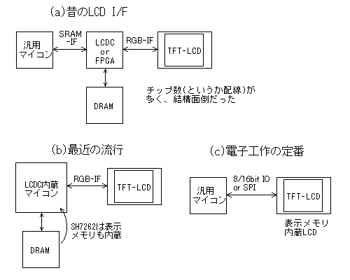
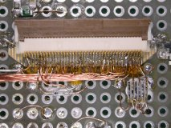

秋月3000円液晶モジュールの試食
2012. 3. 8

2012. 3. 8
以前、秋月から400×96ドットのTFTカラーLCDモジュール(LTA042B010F)が300円という破格で発売され、ちょっとした旋風が起こりました(私は食指が動かずパス)。そして最近になって久しぶりに新たなカラーLCDモジュールが発売されました。今回のは480x272ドットのTFTカラーLCDモジュール(ATM0430D5)で、価格は3000円と特に興味を引かれるほどのものではありません。でも、今回はピンと来るところがあったので試食してみることにしました。とりあえず映してみたというだけで、大したレポートではありませんが。
最近は、QVGAクラスまでのLCDモジュールでは、表示メモリを内蔵したものが多く出回るようになりました。それらは、パラレルまたはSPIインターフェースで表示データを書き込んでやればあとは放っておいてもLCDモジュールが単独でLCDパネルの駆動・表示を続けてくれます。このため、チープなマイコンでも手軽に制御できるようになり、ホビー用途ではそういった表示メモリ内蔵型のモジュールがよく使われています。
しかし、QVGAを越えるサイズになるとほとんどのLCDモジュールでは表示メモリが内蔵されていません。もちろん、3000円液晶も300円液晶と同様に表示メモリは内蔵されていません。したがって、この手のLCDモジュールを使うには、規定のタイミングでリフレッシュ(LCDパネルの駆動)を行うため、外部に表示メモリとLCDCが必須になります。昔は右の図に示すように別チップで個別に表示回路を組んでいました。下の写真は以前とあるシステムの評価用に製作した基板で、汎用LCDC(S1D13506)を使用した3チップ構成になります。でも、これから設計するなら汎用LCDCやFPGAなどといった面倒なことはせず、入手しやすくなったLCDC内蔵マイコンを利用したシステム構成とするのがお手軽といえるでしょう。現在ホビー用途でよく使われているLCDC内蔵マイコンとしては、LPC2478、LPC1788、SH7262などがあり、特に後者のSHは表示メモリまで集積していて完全1チップでいけます。これは雑誌付録にもなりました(どこにしまったかなぁ...)。
←昔製作した3チップ構成のマイコン基板。2枚は作りたくない(笑)。
| Pin# | 秋月3000円 | シャープPSP |
|---|---|---|
| 1 | LED- | GND |
| 2 | LED+ | GND |
| 3 | GND | VCC(2.5V) |
| 4 | VDD(3.3V) | VCC(2.5V) |
| 5 | → | R0 |
| 6 | → | R1 |
| 7 | → | R2 |
| 8 | → | R3 |
| 9 | → | R4 |
| 10 | → | R5 |
| 11 | → | R6 |
| 12 | → | R7 |
| 13 | → | G0 |
| 14 | → | G1 |
| 15 | → | G2 |
| 16 | → | G3 |
| 17 | → | G4 |
| 18 | → | G5 |
| 19 | → | G6 |
| 20 | → | G7 |
| 21 | → | B0 |
| 22 | → | B1 |
| 23 | → | B2 |
| 24 | → | B3 |
| 25 | → | B4 |
| 26 | → | B5 |
| 27 | → | B6 |
| 28 | → | B7 |
| 29 | → | GND |
| 30 | → | CK |
| 31 | → | DISP |
| 32 | NC | Hsync |
| 33 | NC | Vsync |
| 34 | DE | NC |
| 35 | NC | AVDD(5V) |
| 36 | GND | AVDD(5V) |
| 37 | → | NC |
| 38 | NC | TEST1(NC) |
| 39 | NC | TEST2(GND) |
| 40 | NC | TEST3(GND) |
ところでこの秋月3000円液晶、どこかで見たような仕様です。そう、シャープ製PSP液晶(LQ043T3DX02)に酷似していますね。あのLCDモジュールは、以前からPSP修理用部品などと称して怪しく出回っていることからPSP液晶と呼ばれています。もしかしたら、秋月3000円液晶はPSP液晶と同じなのかも知れません。今回秋月3000円液晶を試食してみようと思ったのは、既に製作してあったPSP液晶用の基板を流用して簡単にいけそうだと思ったからです。
実際に調べてみたところ、ドット数、外形寸法、画面寸法、信号ケーブルの位置・ピッチ・ピン数は全て同じです。右の表に秋月液晶とPSP液晶のピン配置を示します。ソケット互換を期待していたのですが、残念ながらそうはいきませんでした。でも、信号ラインについては配置は全く同じで、やはりシャープPSP液晶を基に設計されているようです。たぶん、PSP用に大量に供給されたため利用が増えて準標準規格になったのでしょう。
電源ラインの配置や電圧はかなり異なるのが分かります。PSP液晶は2.5V(2.3〜3.3V)/5Vの2電源なのに対し、秋月液晶は3.3V(3.1〜3.5V)単一電源です。バックライト(LED)の端子は、PSP液晶では別コネクタなのに対し、秋月液晶では信号ラインと同じコネクタにまとめられています。バックライト電流は同じです。
また、秋月液晶は同期信号としてDEのみを使用し、HSYNCとVSYNCは使用しません。水平同期はともかく、垂直同期はどうしているのかと思いましたが、これはDE信号が一定時間無い場合は垂直同期として認識してるようです。なるほど、これならフロントポーチ・バックポーチといったタイミングに関係なく接続でき、ツブシの効く巧い仕様といえます。3.3V単一電源というのも使いやすさのポイントになっています。
電源電圧の違いはPSP液晶を3.3V/5Vで使っていたため問題ありません。もちろん、FPCコネクタへの配線は何本かつなぎ替える必要があります。基板を起こしていたらお手上げだったところですが、UEW配線なのでこの程度の変更なら大したことはありません。それでもLCDC(0.4mmピッチ)からの配線を全部やり直すとなるとさすがに気が重くなるので、電源ラインのつなぎ替えだけで済んだのは幸いでした。
←ジャンパで4本切り換えるだけで秋月液晶とお馴染みのPSP液晶に対応できる。
今回は既にあったLCDC基板を元に10分で試食できましたが、何も準備がない状態では表示メモリを内蔵しないLCDモジュールは少々やっかいです。単に画像を表示してみるだけなら、そこいらに転がっているARM基板やFPGA基板で映像信号を生成するのが手軽で良いと思います。
LCDCのタイミング・パラメータはPSP液晶と同じままで何の変更も必要ありませんでした。やはりPSP液晶使用システムから機械的な変更なしに置き換えられることを狙っているようです。その他気づいた点は次の通りです。偏光板の表面処理はPSP液晶が光沢、秋月液晶がノングレアになっています。バックライトの輝度は秋月液晶の方が高く、標準値の20mAを流すとまぶしいくらいです。発色はPSP液晶に比べ遜色ありません。視野角はどちらも同じような傾向で、Y軸には広く、X軸に狭くなっています。X軸で45°以上傾けると著しくコントラストが低下、60°以上で反転しますが、この手の小型LCDでは仕方のないところでしょう。
さて、今回の秋月3000円液晶が買いかどうかというと、微妙なところです。3000円出すなら300円液晶10個の方が買いのような。いずれにしても表示メモリを内蔵しないLCDモジュールを使うには、何らかのLCDC回路が必須になるので誰でも手軽にとはいきません。つまり、少し頑張らないと使えないのです。それに対し、頑張らなくても使える表示メモリ内蔵LCDモジュールは既に多くの電子工作プロジェクトで使われています。Aitendoではこれより安価なQVGAクラスので表示メモリ内蔵LCDモジュールが多数売られていて、カラーLCDに限っては秋月の完敗といえます。う〜む、秋月を倒すなんて。華僑ネットワーク恐るべし!
...いや、重要なのはそんなことではなく、それを使ってどんな面白プロジェクトを実現するか、ですね。秋月液晶と中華液晶どっちが買いかなんてのは意味のないことです。ピピっと来たら迷わずポチりましょう:-)

{kind=link}
{kind=link}
{kind=link}
{kind=link}
{kind=link}
{kind=link}